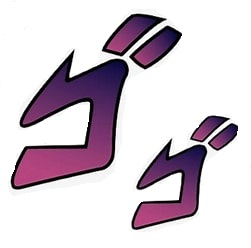
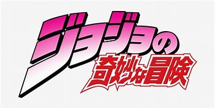

Sebastian's Guide to JoJo Villians


I have been a fan of JoJo's bizaare Adventure for a couple of years now. It was actually the first anime I watched
because my freinds were recommending it to me. Without JoJo's I probably would not have started watching anime at
all. For my web design class, I decided to make kind of a love letter to JoJo's. I hope that this website is able to
show my love for JoJo's, and maybe able to convince some other people to get into the series.
Please note that the majority of the backstories and abilitiy pages are generated by chat GPT. I have read through all the stories myself and made sure they were correct. =======